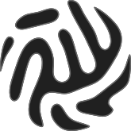

I make things come to life through animation, 3D, and interactive web.
Let’s start a conversation. Fill out the form and let’s schedule a call. Or simply email - but the best communication happens face to face.

Available for select freelance · open to senior in-house roles · reply within 2 business days.